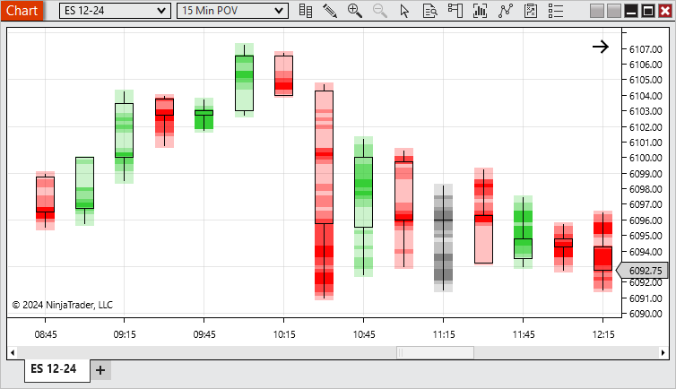
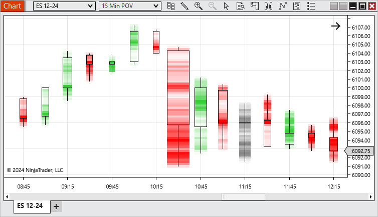

Description
A bar type that plots new bars based on when the cumulative delta surpasses the defined Trend delta or Trend reversal, providing a clear and noise-filtered visualization of significant shifts in market sentiment and order flow dynamics.
 Order Flow Price On Volume Overview
Order Flow Price On Volume Overview
Display and Using Order Flow Price On Volume
There are 2 of the Price On Volume bars.
The first one being the POV Candlesticks. Here we can see by default up bars are colors green, down bars are red, and doji bars are grey. The areas of the bar with the largest volume are more opaque and the areas with the least volume are more transparent.

The second is the POV Equivolume. This displays similar to the POV Candlestick. However, it additionally will adjust the width of the bars. Within the visible area, the bars with the most volume will be the widest and the ones with the least volume will be the thinnest.

Price On Volume bars give the ability to easily see the volume distribution of bars to identify strength and points of control.
Looking at the example above, we can see that the largest volume occurred on the 10:30 bar. We can see that most of the volume occurred lower on the bar with another large amount of volume mid bar. As the market reversed it reached an area of resistance related to the large volume seen in the prior bar. As indicated by the bars width, it had less volume/strength and the market continued to be bearish.
Notes:
1. To plot historically require historical bid ask stamped tick data. See the Data by Provider section for information on what providers offer historical bid/ask stamped tick data.
2. Volume bars could split a single tick into multiple bars for both historical and real-time data.
|
|
Order Flow Price On Volume Parameters
Base period type
|
Defines how much the cumulative delta needs to surpass in it's current trend to build a new bar.
|
Base period value
|
Defines how much the cumulative delta needs to reverse from it's current trend to build a new bar.
|
Ticks per level
|
Sets the level of aggregation for individual price levels, i.e. if price levels should be merged together, default 1 – so each price level delta result is seen individually inside the price bars
|
Chart style
|
POV Candlestick
|
This function the same as the Candlestick Chart style, but with the Price On Volume color distribution
|
POV Equivolume
|
This function the same as the Equivolume Chart style, but with the Price On Volume color distribution
|
See Chart Styles for more information on Candlestick & Equivolume
|
Strength sensitivity
|
Sets how many levels of strength should be distributed within a bar
|
|